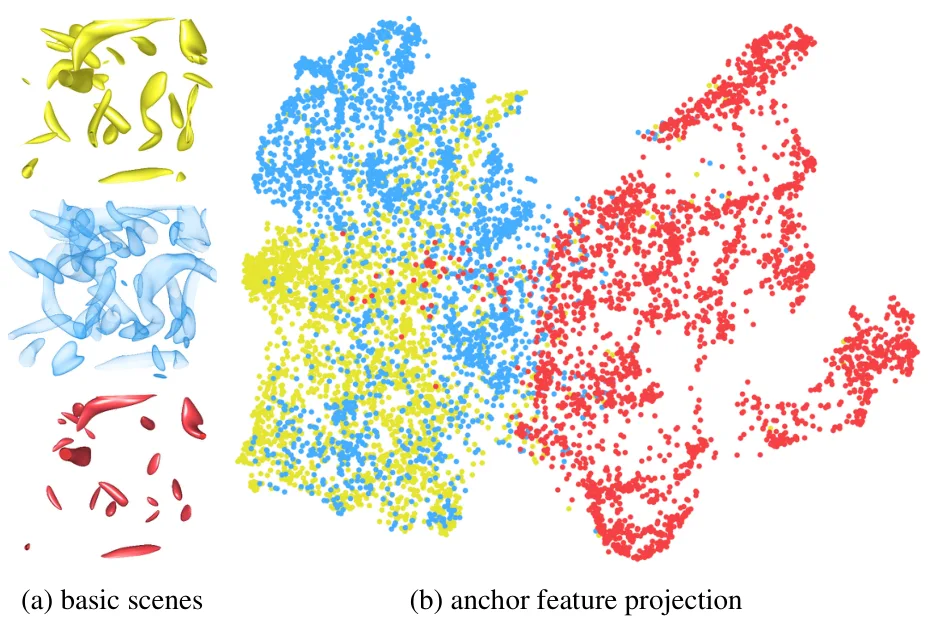
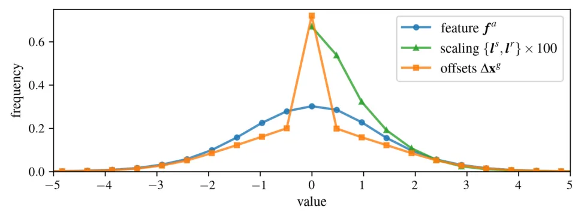
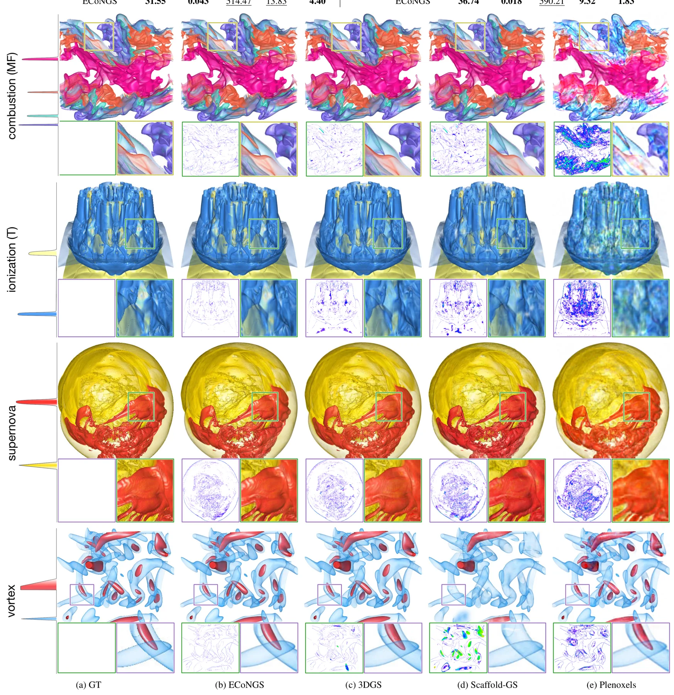
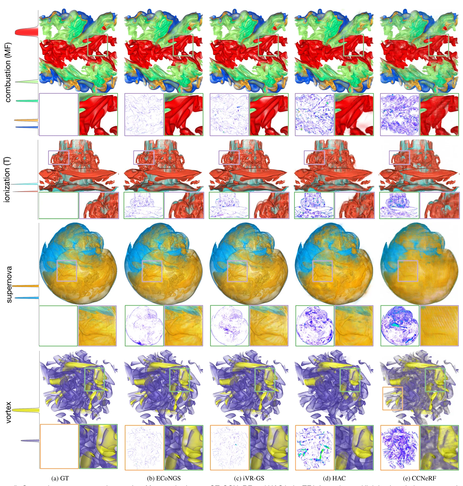
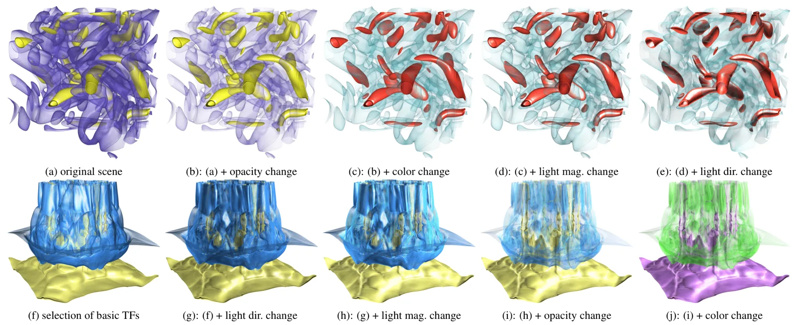
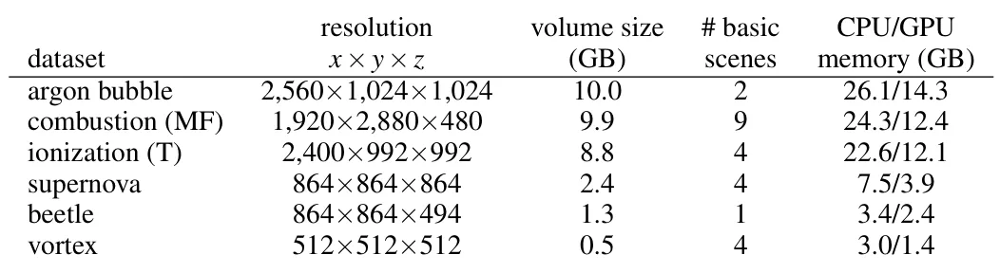
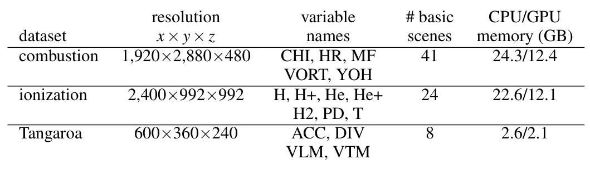
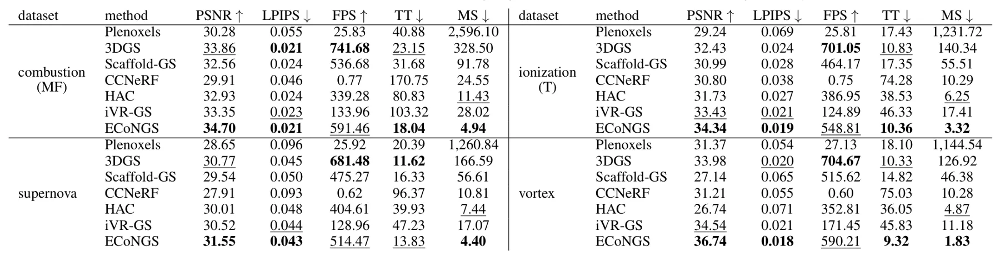
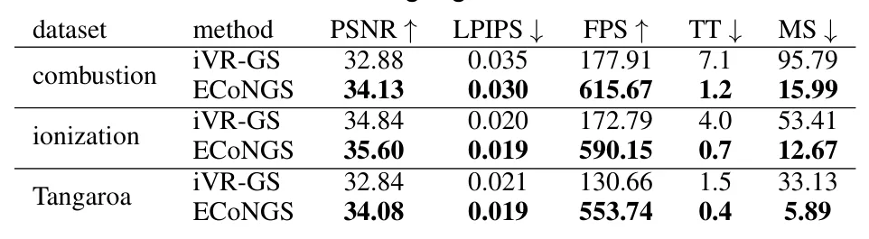

ECoNGS：用于体数据可视化的高效压缩神经 Gaussian SplatsECoNGS: Efficient Compressive Neural Gaussian Splats for Volume Visualization
压缩与训练效率结果强，但应用是体数据可视化而非相机观测驱动的 SLAM/场景重建。
一句话工作总结
以 anchor、轻量预测网络和熵编码压缩科学体数据的 Gaussian 表示，并跨相似场景共享参数。
摘要
ECoNGS 用轻量网络从显式 anchor 动态预测隐式、可编辑 Gaussian splats，结合隐式表示的紧凑性和显式 primitive 的高性能渲染。其联合学习策略对几何相似场景共享参数，并以 neural entropy model 压缩 anchor 属性。相对 iVR-GS，重建 PSNR 最多提高 2.2 dB，模型最多缩小 6.1 倍，训练最多加速 5.9 倍。
Recent advances in differentiable Gaussian splatting have highlighted the potential of primitive-based approaches as alternative scene representations for interactive, high-quality, volume visualization (VolVis) of large datasets. However, the explicit nature of current primitive-based methods, combined with isolated optimization for each VolVis scene, results in redundant, non-compact representations. We present ECoNGS, an efficient compressive neural Gaussian splatting framework for VolVis scene representation. ECoNGS employs lightweight neural networks to dynamically predict implicit, editable Gaussian splats from explicit anchor points, effectively combining model compactness and parameter efficiency of implicit representations with high-performance rendering of explicit primitives. We explore a joint learning strategy that clusters geometrically similar scenes and shares parameters across them, significantly reducing overall training time and model size while maintaining reconstruction fidelity. To achieve a more compact scene representation, we further compress the explicit anchor attributes using a neural entropy model that estimates their probability distributions, enabling compact storage via entropy coding. We systematically investigate Gaussian initialization strategies and propose a simple yet effective scheme tailored for VolVis scenes, improving reconstruction accuracy and accelerating convergence. We evaluate ECoNGS qualitatively and quantitatively across various univariate and multivariate VolVis scenes, highlighting its superior performance over prior methods in training time, reconstruction quality, and model size. In particular, compared with the prior method iVR-GS, ECoNGS improves reconstruction quality by up to 2.2 dB in PSNR while reducing the model size by up to 6.1x and the training time by up to 5.9x. The code is available at https://github.com/TouKaienn/ECoNGS.
中文解读摘录
图表/页面预览

{kind=link}

{kind=link}

{kind=link}

{kind=link}

{kind=link}

{kind=link}

{kind=link}

{kind=link}

{kind=link}
